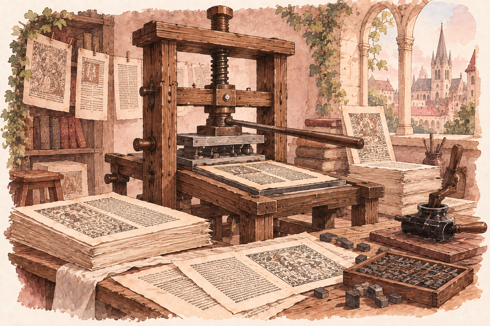
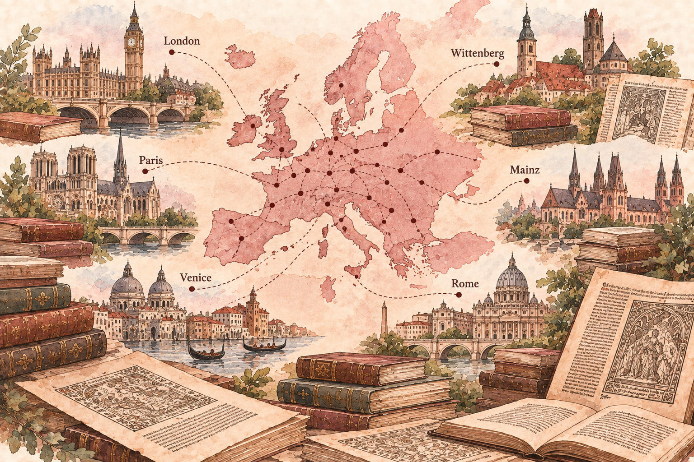

How technology transformed who can access knowledge, how quickly ideas can spread, and what happens when information becomes part of everyday life.
For centuries, accessing written knowledge could be expensive, slow, and limited. New technologies gradually changed that relationship.
Follow the story from manuscripts and the printing press to the Internet, digital devices, and artificial intelligence.
Before Gutenberg's printing system transformed book production in Europe, books had to be copied by hand. Producing a manuscript required enormous amounts of time and skilled labor.
When books were this expensive, owning written knowledge was unrealistic for many ordinary people. Access was much more closely connected to wealth, institutions, and social status than it is for many people today.

In the fifteenth century, Gutenberg developed a printing system that combined durable metal type, oil-based ink, and a press. Instead of copying every book by hand, printers could rearrange the type and produce hundreds of copies.
Gutenberg's Bibles were impressive, but the biggest change was economic. As writing became much cheaper to reproduce, books and ideas could reach far more people than handwritten manuscripts could.
In 1517, Martin Luther challenged practices and teachings of the Catholic Church through his Ninety-Five Theses. People had challenged the Church before him, but Luther had access to something earlier reformers did not: the printing press.
Challenging the Church was not new. What was different was the speed at which Luther's arguments could circulate. Printing allowed his writings and a German translation of the New Testament to be reproduced and distributed much more widely.
A technology does not only matter because of what its inventor intended it to do. Its impact also depends on what people decide to do with it.

As printing spread across Europe, access to printed information was no longer limited to the first major centers of the new industry. Printing activity eventually appeared in hundreds of different places, including surprisingly small communities.
What surprised me most was seeing that printing activity was not limited to places like major capitals or wealthy cities. Even smaller places that I would not have expected to have access to a printing press became part of this growing network. It made the proliferation of technology feel much more real to me.
A technology can begin in a particular place, but once people see value in it, they can copy it, adapt it, and bring it into new communities. Its impact grows far beyond where it started.
Today, my relationship with knowledge looks completely different. With an iPad, computer, Kindle, and access to the Internet, I can move between textbooks, articles, notes, videos, and other sources of information in seconds.
The contrast is difficult to imagine: a handwritten book once represented months of wages, while today a single digital device can provide access to more information than one person could realistically read in a lifetime.
Books were expensive, slow to reproduce, and difficult for many people to access.
Information can travel across the world and reach millions of people almost instantly.
Not necessarily. The printing press made knowledge easier to reproduce, but it also helped inflammatory arguments and propaganda circulate. The Internet creates a similar dilemma: the same systems that give us extraordinary access to knowledge can also spread misleading or harmful information.
Suleyman describes a recurring challenge of technology: once technologies spread, more people can use them, adapt them, and shape them in ways their creators may never have intended. The printing press is a powerful historical example of this. Gutenberg wanted to print books and build a successful business, but printing eventually became part of transformations in religion, science, politics, and society.
Artificial intelligence makes me wonder about the same problem. We know how we use AI today, but can we really predict what people will use it for decades from now?
For centuries, one of the greatest challenges was simply gaining access to knowledge. Technology gradually changed that. Manuscripts became printed books, printing spread across communities, and today digital information can travel around the world almost instantly.
Who can access knowledge?
How quickly can it spread?
What happens when we cannot fully control how it is used?
The history of the printing press makes me think differently about artificial intelligence. Technologies do not remain exactly what their creators imagined. People adopt them, adapt them, combine them with other technologies, and sometimes use them in completely unexpected ways.
This does not mean that technology is automatically good or bad. It means that creating powerful technology also creates questions about responsibility, consequences, and containment.
This infographic was created using materials from my Honors Seminar on humans and technology. The historical information and ideas presented here were informed by the following course materials.
Used for information about Gutenberg's printing system, the changing cost of books, the economics of printing, and the rapid circulation of Martin Luther's writings.
Used for historical context about Martin Luther, the Reformation, and the role of printing in spreading religious ideas.
Used to understand how printing activity spread geographically across Europe and reached communities beyond its earliest centers.
View the interactive map ↗Used for ideas about technological proliferation, unintended consequences, containment, and the difficulty creators face in controlling technologies after they spread.
The illustrations used throughout this infographic were generated with the assistance of OpenAI's generative AI tools specifically for this project. I selected the concepts, historical scenes, visual direction, and pastel aesthetic used to create the images.
Generative AI was also used as a collaborative tool while developing this interactive webpage.